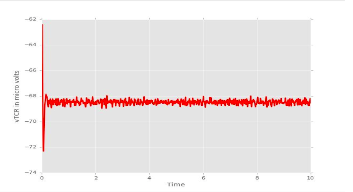

EEG Simulator
Replace humans or other animal subjects for EEG Simulation
Live subjects are used for research to capture EEG readings. This method is costly, inefficient, time consuming and not scalable. EEG Simulator enables researchers to scale experiments at reduced costs and at a faster level.
Awards
This application has been adapted by University of Manchester to use it further in implementing plasticity in the Kinetic LGN Model.

EEG readings generated using simulation of a kinetic LGN model.